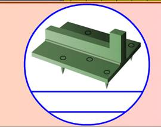

По первому способу закрепление на железнодорожных платформах ВГМ производят комплектами универсальных многооборотных креплений (УМК-1Г и УМК-2Г).

Комплект состоит из четырех упоров, которые укладывают под гусеницы в районах опирания на них вторых и предпоследних опорных катков. Упоры препятствуют продольным и поперечным перемещениям техники.
Два упора укладывают под одной и два под другой гусеницей.
Масса ВГМ, тип упоров для их закрепления, обозначения упоров должны соответствовать данным таблицы. Обозначение наносится на каждом упоре.
|
Масса ВГМ, т |
Тип УМК |
Обозначение упора |
|
7 – 25 25,1 - 42 |
УМК – 1Г УМК – 2Г |
ЦУП ВОСО УМК – 1Г ЦУП ВОСО УМК – 2Г |
Подготовка машины к погрузке
Для закрепления ВГМ на платформе перед погрузкой необходимо:
— натянуть гусеницы как для движения по шоссе;
— тщательно очистить от грязи, а зимой от снега и наледи;
— проверить исправность тормозной системы и стопоров башни;
— привести в положение для транспортирования по железной дороге в соответствии с инструкцией по эксплуатации.
Порядок размещения и закрепления ВГМ на платформе
1. ВГМ перед закреплением устанавливают симметрично продольной оси платформы, в ее начале.
2. Перед гусеницами, с их внутренней стороны, в месте предполагаемого нахождения предпоследних опорных катков вкладывают первую пару упоров, по одному у каждой гусеницы.
Упоры укладывают так, чтобы их гребни находились между грунтозацепами, а хвостовики заходили в торцовые цевки (при их наличии) траков гусениц.
3. Машину продвигают вперед и останавливают перед местом предполагаемого нахождения вторых опорных катков. Укладывают вторую пару упоров с соблюдением требований укладки первой пары.

4. Продвигают машину по платформе дальше вперед, пока упоры не окажутся в районах опирания на гусеницы вторых и предпоследних опорных катков.
5. Допускается расположение упоров под гусеницами непосредственно вместе опирания на них вторых и предпоследних катков или на расстоянии ± 0,5 м от точек опирания катков, но не менее 1,7 м один от другого.

Подготовка погруженных машин к перевозке
Для перевозки погруженной и закрепленной ВГМ на платформе, необходимо:
— поставить на передачу заднего хода и затормозить;
— рычаг коробки передач и педаль тормоза после этого опломбировать;
— рычаг подачи топлива установить в нулевое положение.
Порядок закрепления ВГМ с помощью УМК может быть таким же, как в случае их закрепления металлическими шпорами.